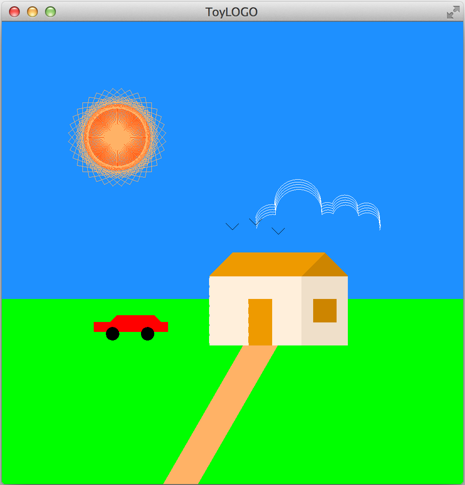
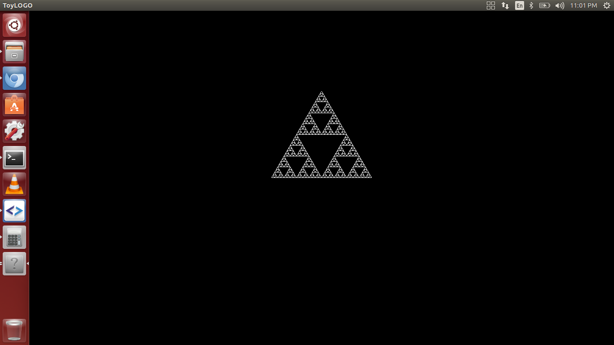

Following toylogo program produces a drawing of a scenery which a five year old boy would first draw. It has different components like sun, clouds, car, hut, and birds. Image it produces is found below.
Toylogo source of the drawing can be found here
Fractal drawing using recursion is displayed below.
